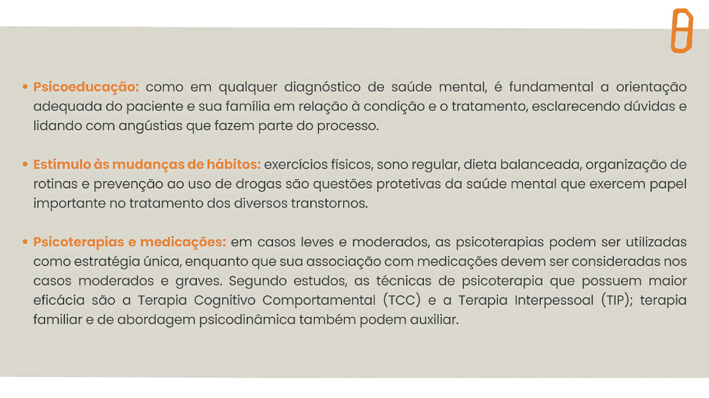

Depressão: o que é, quais são os sintomas e os tratamentos
Dentre os diversos temas relacionados à saúde mental, a depressão é um dos mais conhecidos. A OMS
estima que o transtorno depressivo atinja mais de 300 milhões de pessoas no mundo. Seus sintomas
podem surgir em qualquer momento da vida e, sem o tratamento adequado, tendem a ser recorrentes.
A sociedade em geral tem uma ideia sobre o que é a depressão, mas é fundamental conceituar de forma
clara essa doença para que possamos encará-la com mais assertividade. Trata-se de um transtorno
mental caracterizado pelo humor deprimido persistente e a perda de interesse em atividades
cotidianas.
É muito comum que as pessoas confundam tristeza com depressão, dificultando a busca por ajuda. “A
tristeza, por definição, é uma emoção e toda emoção é passageira, ou seja, tende a desaparecer
quando cuidamos dos sintomas e do que está acontecendo em nossa vida. Na depressão, os sintomas não
desaparecem com o tempo”. – esclarece a psicóloga e especialista do Instituto Ame Sua Mente, Ana
Carolina D’Agostini.
“Na depressão, as consequências emocionais e psicológicas são acompanhadas de alterações físicas e
cognitivas. Para caracterizar a depressão, os sintomas devem ter intensidade, duração e prejuízo
significativos para a vida da pessoa.” – conclui Ana Carolina.
Quais são os sinais e sintomas de depressão?
Muitas pessoas que convivem com o transtorno dizem que deixam de ter sentimentos agradáveis ao
realizar atividades cotidianas e, por vezes, essa perda de interesse aparece associada à sensação de
cansaço ou fadiga. Os sintomas geralmente ocorrem na maioria dos dias por, pelo menos, duas semanas,
trazendo prejuízos à vida cotidiana, seja na esfera social, pessoal ou acadêmica.
Confira outras características da depressão:
- Tristeza persistente;
- Perda de interesse em atividades antes consideradas prazerosas;
- Alterações no apetite gerando perda ou ganho de peso;
- Alterações de sono;
- Sensação de fadiga e de falta de energia;
- Diminuição de concentração;
- Inquietação ou lentificação;
- Culpa;
- Desesperança;
- Sentimento de inutilidade;
- Pensamentos sobre morte.
É importante ressaltar que nem todos os sintomas mencionados precisam estar presentes para um
diagnóstico. “Cada pessoa que está enfrentando a depressão tem uma experiência específica em relação
aos
sintomas. O que é comum às pessoas com depressão é a mudança de padrão nas formas de comportamento,
pensamentos e sentimentos. O humor deprimido é uma característica bem recorrente – uma sensação de
tristeza e de menos valia.” – descreve Ana Carolina D’Agostini.
A forma de expressar a depressão pode ser muito diferente dependendo da idade. Em vez de tristes,
podemos
encontrar adolescentes irritadiços, além de apresentarem queixas físicas, alterações de sono,
apetite e
alta sensibilidade à rejeição social. Já as crianças podem ficar mais negativas e com baixa
tolerância à
frustração, comportamentos que podem gerar brigas e explosões.
Um sinal de alerta é quando podemos observar tais alterações de comportamentos em mais de um
espaço de
convivência, por exemplo, em casa e na escola.
Quais são as causas e fatores de risco para a depressão?
Como os demais transtornos mentais, a causa da depressão é multifatorial. Os fatores de risco
costumam ser cumulativos. Eles podem ser agrupados em:
- Fatores genéticos: O efeito dos genes no desenvolvimento e funcionamento
cerebral. Assim, se parentes próximos como pais e avós já tiveram depressão, maior é a
probabilidade de se desenvolver o quadro.
- Fatores ambientais: Efeitos de estímulos externos sobre o cérebro, como traumas
e o contexto familiar e estilos parentais (atitudes e estratégias que os pais usam na educação
dos filhos), falta de uma rede de suporte (família, amigos e escola), isolamento, problemas de
comunicação. Outros fatores ambientais que impactam diretamente a saúde mental são o estresse, o
bullying, o uso intensivo de redes sociais, o uso de drogas e o racismo. É importante destacar
que, quanto menor a criança, maior é a influência do ambiente.
Qual é a prevalência da depressão?
Estudos apontam que a depressão é menos frequente na infância do que na adolescência. Aproximadamente
1% a 2% das crianças apresentam quadros de depressão. Apesar de menos frequente, ela causa
sofrimento e seus sintomas tendem a se agravar gradualmente.
Na adolescência a depressão passa a ser bem mais prevalente, acometendo em torno de 4% a 8% dos
adolescentes, sendo duas vezes mais comum em jovens do sexo feminino.
Quando consideramos toda a população mundial, esse índice de pessoas que lidam com o transtorno
depressivo é de 4%.
Quais são os riscos e consequências da depressão?
A depressão pode se desenvolver de forma gradual e com início precoce. Quanto antes a pessoa buscar
ajuda
e receber tratamento adequado, maior a probabilidade de recuperação.
Em contrapartida, quanto mais tempo os sintomas se mantêm e se intensificam, maior a chance de a
depressão se tornar uma condição crônica, alternando entre períodos de melhora e piora nos sintomas.
Quando não tratada, a depressão leva ao baixo desempenho acadêmico ou profissional, problemas de
saúde,
disfunção familiar e social, além de baixa autoestima.
Não é incomum que outros transtornos mentais se apresentem juntamente com a depressão, como por
exemplo
o TDAH, o que pode tornar o diagnóstico mais complexo. Ademais, é importante saber que a depressão é
um
dos transtornos mentais que mais está associado ao maior risco de comportamento autolesivo e
suicida. O
tratamento do transtorno depressivo é a melhor prevenção. Acesse todos os nossos conteúdos
exclusivos
disponíveis sobre esse tema.
Quais são os tratamentos para a depressão?
Depressão tem cura? O tratamento da depressão abrange diversos aspectos. O objetivo é desenvolver e
recuperar habilidades para a retomada das atividades e reduzir a probabilidade de recaídas. As
estratégias básicas são o primeiro passo do tratamento e podem ser aplicadas para todos os
transtornos mentais.

É preciso falar sobre depressão e saúde mental
A depressão é uma doença relevante no Brasil e no mundo, inclusive é o principal motivo de
incapacidade e afastamento do trabalho. O estigma em torno do assunto, assim como o auto estigma –
quando a própria pessoa sente-se culpada, diminuída ou envergonhada frente às alterações de seus
sentimentos e comportamentos – impedem a busca por ajuda. Por isso, é tão importante falarmos de
saúde mental para criar uma nova cultura em que todos possam se cuidar e atingir seus potenciais. O
conhecimento é a melhor arma contra o preconceito!
A grande maioria dos transtornos mentais começa durante a infância e a adolescência: 75% dos
transtornos mentais têm início antes dos 24 anos de idade e 50% até os 14 anos. Estima-se que 80%
desses casos não são tratados devido, principalmente, à falta de informação e estigma em torno do
assunto. Para mudar essa realidade, é muito importante observar esses dados e ampliar o conhecimento
.
No Instituto Ame sua Mente, temos diferentes projetos que ajudam a promover a saúde mental no
ambiente escolar. Confira nosso menu de conteúdos com diversos temas e formatos para consumir quando
e onde quiser. Acesse neste link.
Cuidar da gente é cuidar da mente. Quanto mais cedo, melhor!